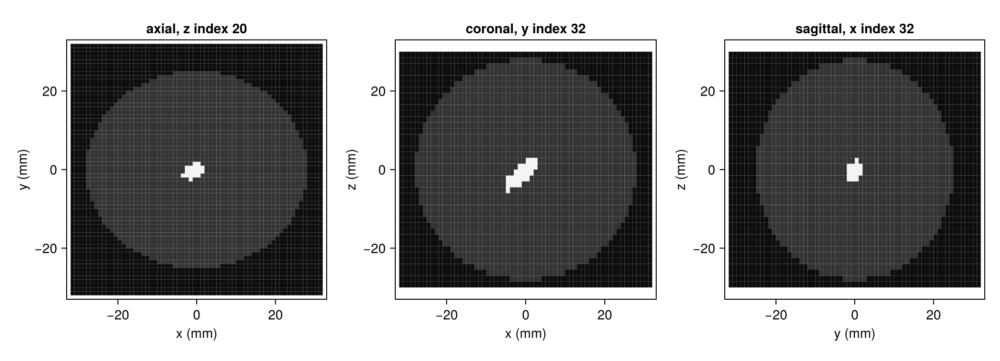
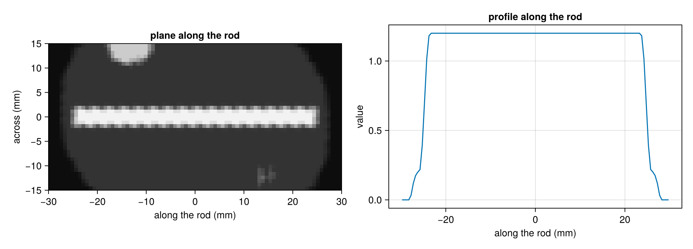

Explore a Tomographic Image
This tutorial takes one 3D image and reads what it says about itself: where its voxels are, how to show it in millimeters, how to find the voxel at a position and the position of a voxel, how to measure in it, and how to look at it along a tilted structure. It builds on Getting Started; Grids, Spaces and Transforms explains the conventions.
using TomoImages, CairoMakie, LinearAlgebraThe image
A volume of 64 × 64 × 40 voxels in the patient space LPS (+x toward the patient's left, +y toward the back, +z toward the head), with voxels of 1 × 1 × 1.5 mm. It shows a body (value 0.2), two balls (1.0 and 0.8) and a thin rod (1.2) that runs obliquely through the volume. The values come from a function of the position in millimeters. Each array dimension is an index axis of the grid, marked by GridAxis and named x, y and z:
g = GridGeometry((64, 64, 40); spacing=(1.0, 1.0, 1.5), origin=(-31.5, -31.5, -29.25), space=LPS())
rod_axis = [1.0, 0.5, 1.0] / 1.5 # a unit vector
function phantom(x, y, z)
p = [x, y, z]
t = p' * rod_axis # distance along the rod from its center at the origin
abs(t) < 25 && sum(abs2, p - t * rod_axis) < 2^2 && return 1.2
sum(abs2, p - [-15, 10, -10]) < 5^2 && return 1.0
sum(abs2, p - [12.5, -7.5, 12.75]) < 4^2 && return 0.8
(x / 28)^2 + (y / 25)^2 + (z / 28)^2 < 1 && return 0.2
0.0
end
img = TomoImage([phantom(index_to_world(g, (i, j, k))...) for i in 1:64, j in 1:64, k in 1:40], g;
dims=(x=GridAxis(1), y=GridAxis(2), z=GridAxis(3)));The image knows its size, its geometry and the names of its dimensions:
summary(img)"64×64×40 TomoImage{Float64} in LPS with dims x, y, z"geometry(img)GridGeometry 64x64x40 in LPS (3D)
spacing: (1.0, 1.0, 1.5)
origin: (-31.5, -31.5, -29.25)
direction: axis-alignedThe origin is the center of the first voxel; the spacing is the distance between voxel centers; the direction says that the index axes run along the axes of the space. The volume extends over fov millimeters along each index axis, from edge to edge, around its center:
fov(g), fov_center(g)([64.0, 64.0, 60.0], [0.0, 0.0, 0.0])Slices in millimeters
Selecting one index of a dimension gives a 2D image that keeps its place in the volume. Index 20 along z gives the axial slice nearest to the center: with an even number of slices, no slice lies exactly at the center, and this one lies at z = -0.75 mm:
axial, coronal, sagittal = img[z=20], img[y=32], img[x=32]
index_to_world(geometry(axial), (1, 1))3-element StaticArraysCore.SVector{3, Float64} with indices SOneTo(3):
-31.5
-31.5
-0.75The three slices, drawn in the coordinates of the space, so that the voxels of 1.5 mm along z appear as long as they are (gray scale from 0 to 1.2). They cut the rod near its center; the balls lie away from these slices:

Positions and voxels
index_to_world gives the position of a voxel, world_to_index the fractional index of a position. The second ball is centered at (12.5, -7.5, 12.75) mm, which is the center of a voxel, so its index is a whole number:
i = world_to_index(g, (12.5, -7.5, 12.75))3-element StaticArraysCore.SVector{3, Float64} with indices SOneTo(3):
45.0
25.0
29.0img[Int.(i)...]0.8A position between voxel centers gives a fractional index, and the voxel containing it is the nearest one, round.(Int, i). Positions outside the voxels of the image are not in the grid:
(12.5, -7.5, 12.75) in g, (0.0, 0.0, 40.0) in g(true, false)Measuring in millimeters
The first ball, as the set of its voxels: their positions give its center, and their number times the volume of one voxel its volume in cubic millimeters, which takes the 1.5 mm along z into account:
ball = findall(==(1.0), parent(img))
positions = [index_to_world(g, Tuple(c)) for c in ball]
center = sum(positions) / length(positions)
volume = length(ball) * prod(spacing(g))
center, volume, 4 / 3 * pi * 5^3([-15.0, 10.0, -10.112068965517242], 522.0, 523.5987755982989)The center lies within a fraction of a voxel of (-15, 10, -10) mm, where the ball was placed; the volume of its voxels is that of a ball of radius 5 mm, up to the voxels at its surface.
Along the rod
The rod runs obliquely through all three slices above, so no slice shows it whole. A grid whose first index axis runs along the rod shows it: 80 × 40 × 1 voxels of 0.75 mm in the plane spanned by the rod and a horizontal direction perpendicular to it (no z component), centered at the origin. Its direction matrix holds the rod axis, that direction and their cross product; the origin is the first voxel center, half the extent back from the center:
u = rod_axis
v = [-u[2], u[1], 0.0] / hypot(u[1], u[2])
w = cross(u, v)
D = hcat(u, v, w)
plane = GridGeometry((80, 40, 1); spacing=(0.75, 0.75, 0.75), origin=-D * [0.75 * 79 / 2, 0.75 * 39 / 2, 0.0],
direction=D, space=LPS())
reformat = resample(img, plane);A profile along the rod is the same with a grid of one voxel across: 120 points of 0.5 mm along the rod axis:
line = GridGeometry((120, 1, 1); spacing=(0.5, 0.5, 0.5), origin=-u * 0.5 * 119 / 2, direction=D, space=LPS())
profile = parent(resample(img, line))[:, 1, 1];
In the plane the rod appears whole, 50 mm long, and the plane also cuts the edges of the two balls (at the top and the bottom). The profile shows the value 1.2 of the rod over its length and the body around it. Both are resampled with multilinear interpolation from voxels of 1 × 1 × 1.5 mm: the edges of the rod are smoothed over about one voxel and show the steps of the voxels.
This page was generated using Literate.jl.